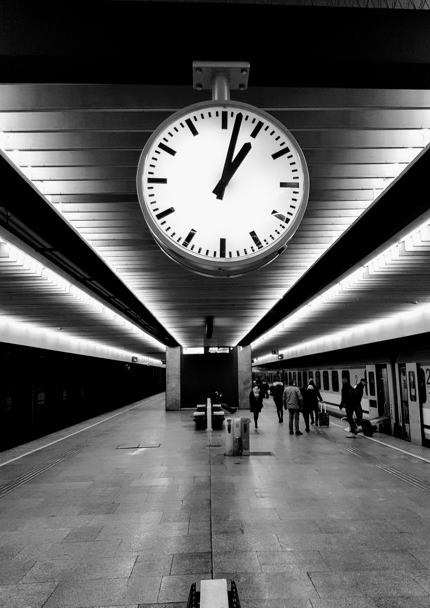

Sam O'hey
❧
Bezwzględny jak Tissot
Odszedłeś nie mogąc złapać oddechu Został mi po Tobie ten Tissot I ciągle tyka Tak tak niewzruszony Nawet na chwilę nie zamilkł Biegnie bez zadyszki Bezlitosny czas
31/01/2019❧
Mam życie
Jeśli Ciebie nie ma Boże powiedz czego żałować odchodząc tak niewiele mam kilka złotych smutnych wierszy trochę bez nadziei niewiarygodnie stęsknione życie
18/12/2018❧
Martwię się czasem
 Warszawa Centralna Pociąg Berlin Hbf - Warszawa WschodniaMartwię się czasem Gdy za długo w złą stronę Czasem toczą się sprawy Nie chce się zawrócić
10/03/2018
❧
Chiński, nowy rok
Chińskie, sztuczne ognie wystrzelają. I zaraz przepalają się; w sekundę, dwie. Jak nasze życie. Pstryk i już. Czasem niewypał. Zwykle krótki rozbłysk i koniec. Potem tylko styczniowa, ciemna zimność, jak w dalekim w kosmosie. Takie święto.
Na samym końcu wszystko zwalnia. Ale i tak nie starcza czasu, by usiąść przy stole, wznieść pożegnalny toast i każdemu, z osobna podziękować. Jakbyśmy nie mogli spotykać się dzień przed śmiercią. Zawsze kilka dni po.
2017 / 2018